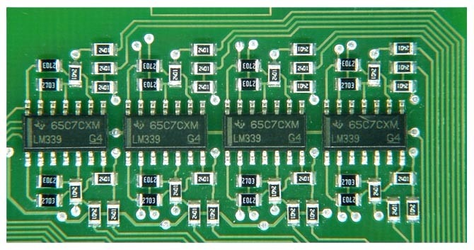
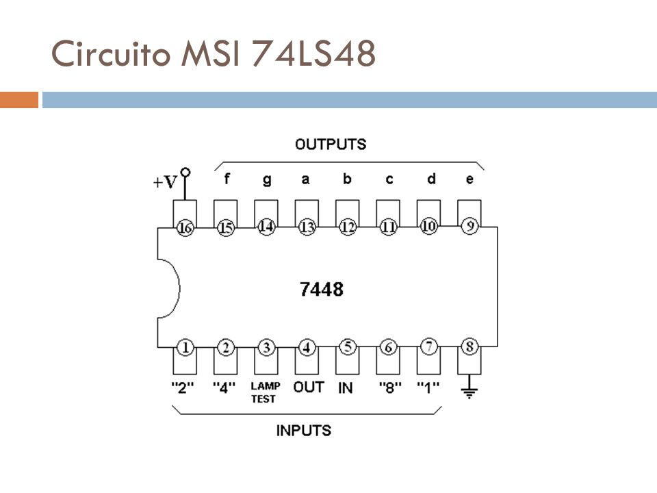
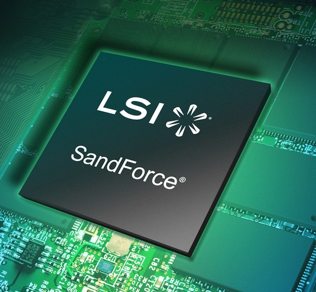

Boole propuso un esquema o sistema para la expresión simplificada de problemas lógicos a través de dos estados (falso o verdadero) mediante un procedimiento matemático. A esta estructura se la denomina álgebra booleana. A través del sistema ideado por Boole, se utilizan símbolos para el desarrollo de las operaciones lógicas “SI”, “NO”, “O” e “Y” (o “YES”, “NOT”, “OR” e “IF” en inglés), que de este modo pueden esquematizarse. Este es uno de los pilares de la aritmética computacional y de la electrónica.

Puede decirse que el álgebra booleana apela a nociones algebraicas para el tratamiento de enunciados de la lógica proposicional. Las operaciones más habituales son las binarias, que requieren de dos argumentos. Se llama conjunción lógica al resultado verdadero que se obtiene cuando los dos enunciados son verdaderos: si A es verdadero y B es verdadero, la conjunción de A y B será verdadera.